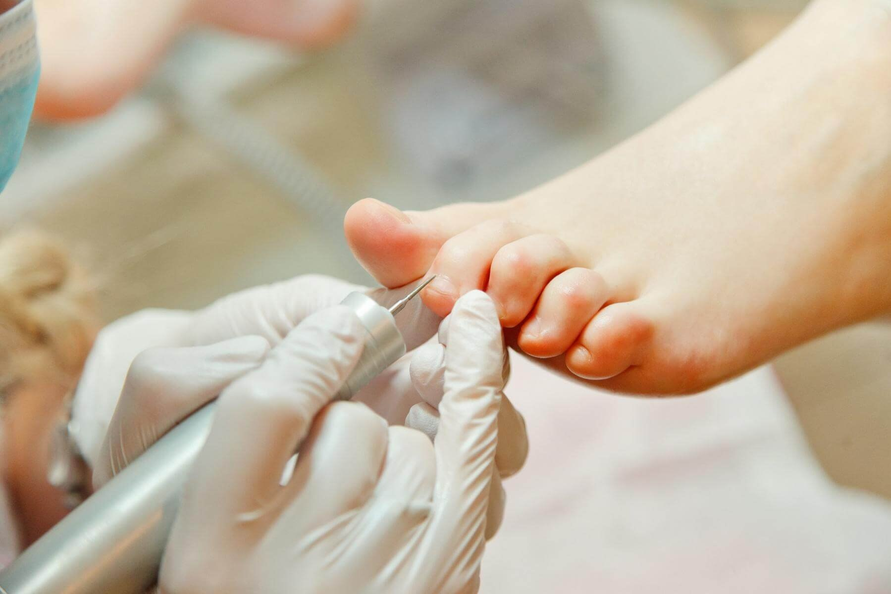

Маникюр, педикюр медицинский

Маникюр, педикюр медицинский
Как проходит лечение вросшего ногтя (Онихокриптоз) в PODOcenter
Вросший ноготь – одна из самых распространённых подологических проблем,
от которой никто не застрахован. Сопровождается воспалением и нагноением,
болезненным ощущением при ходьбе, а в последствии деформацией ногтевой пластины и
валиков.
В зависимости от состояния длительность лечения от 2 недель до 24 месяцевНаши специалисты
решают
эту проблему без боли и хирургического вмешательства пациентам любого возраста.
Метод и способ лечения подбирается персонально, чтобы не только избавить Вас от боли и
патологии, но и сохранить эстетический
вид ногтей.
Показания для медицинского педикюра.
- Наличие натоптышей и мозолей; - при любых формах ониходистрофии (изменения формы, цвета и структуры ногтя); - изменения состояния кожных покровов (зуд, сухость, раздражение, покраснение, трещины); - боль и дискомфорт во время хотьбы; - нарушение потоотделения; - неприятный запах; - диабетическая стопа.
01
У Нас безпечно !
Ми витримуємо всі етапи та процеси обробки , стерилізації та зберігання інструментів згідно стандартів ВООЗ. Дезинфекція приміщень . Використовужмо тільки сетифіковане обладнання та засоби дезінфекції.
02
Професіоналізм
Наші спеціалісти регулярно поновлювать знання , проходять курси підвищення кваліфікації, відвідують міжнародні конгреси та конференції. Мы співпрацюємо із вузькопрофільними лікарями та лабораторіями.
03
Конфіденційність
У нашому центрі ви знаходитесь один на один зі спеціалістом у затишному, окремому кабінеті. Ми подбали про створення зонованих приміщень, що забезпечують максимальний комфорт і спокій для кожного клієнта.
04
Комфорт
Зручні крісла, сучасне обладнання , легка музика , кава / чай /вода... вы зможете максимально комфортно провести час процедури. Також для зручності у нас ви можете придбати професійні засоби для домашнього догляду, перев'язок високого рівня якості.
| № послуги | Послуга | Вартість |
|---|---|---|
| 1 | Обрізний педикюр | 600 грн |
| 2 | Обробка врослого нігтя | 400 грн |
| 3 | Масаж стоп | 300 грн |
| 4 | Видалення мозолів | 350 грн |
| 5 | Гігієнічний догляд | 500 грн |
Питання-Відповідь
Answer for Чим відрізняється звичайний педикюр від медичного?
Answer for Чим відрізняється звичайний педикюр від медичного?
Answer for Чим відрізняється звичайний педикюр від медичного?
Answer for Чим відрізняється звичайний педикюр від медичного?
Answer for Чим відрізняється звичайний педикюр від медичного?
Answer for Хто такий подолог? Answer for Хто такий подолог? Answer for Хто такий подолог? Answer for Хто такий подолог? Answer for Хто такий подолог? Answer for Хто такий подолог? Answer for Хто такий подолог?
Answer for Що таке медичний педикюр?
Получить консультацию